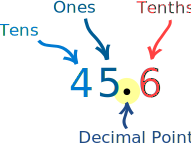
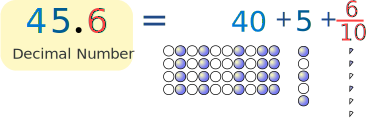
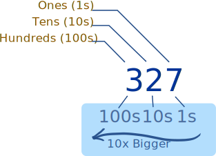
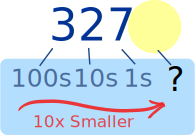
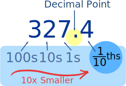
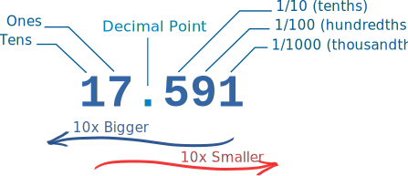
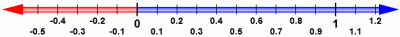

Decimals
First, let's have an example:

Here is the number "forty-five and six-tenths" written as a decimal number:
The decimal point goes between Ones and Tenths.
45.6 has 4 Tens, 5 Ones and 6 Tenths, like this:

Now, let's discover how it all works ...
Place Value
It is all about Place Value !
When we write numbers, the position (or "place") of each digit
is important.
In the number 327:
- the "7" is in the Ones position, meaning 7 ones (which is 7),
- the "2" is in the Tens position meaning 2 tens (which is twenty),
- and the "3" is in the Hundreds position, meaning 3 hundreds.
|  |
| "Three Hundred Twenty Seven" |
| As we move left, each position is 10 times bigger! | |
| Tens are 10 times bigger than Ones Hundreds are 10 times bigger than Tens |
... and ...
| As we move right, each position is 10 times smaller. | |
| From Hundreds, to Tens, to Ones |
|  | But what if we continue past Ones? What is 10 times smaller than Ones? 110ths (Tenths) are! |
| But we must first put a decimal point, so we know exactly where the Ones position is: |
 | |
"three hundred twenty seven and four tenths" but we usually just say "three hundred twenty seven point four" |
||
And that is a Decimal Number!
We can continue with smaller and smaller values, from tenths, to hundredths, and so on, like in this example:

Have a play with decimal numbers yourself:
Large and Small
So, our Decimal System lets us write numbers as large or as small as we want, using the decimal point. Digits can be placed to the left or right of a decimal point, to show values greater than one or less than one.
The decimal point is the most important part of a Decimal Number. Without it we are lost, and don't know what each position means.
| 17 | 591 | |||
| On the left of the decimal point
is a whole number (such as 17) |
||||
| As we move further left, every place gets 10 times bigger. |
||||
| The first digit on the right means tenths (1/10). |
||||
| As we move further right, every place gets 10 times smaller (one tenth as big). |
||||
Zoom into decimals ...
See decimals on the Zoomable Number Line

Definition of Decimal
 The word "Decimal" really means "based on 10" (From Latin decima: a tenth part).
The word "Decimal" really means "based on 10" (From Latin decima: a tenth part).
We sometimes say "decimal" when we mean anything to do with our numbering system, but a "Decimal Number" usually means there is a Decimal Point.
Ways to think about Decimal Numbers ...
... as a Whole Number Plus Tenths, Hundredths, etc
We can think of a decimal number as a whole number plus tenths, hundredths, etc:
Example 1: What is 2.3 ?
- On the left side is "2", that is the whole number part.
- The 3 is in the "tenths" position, meaning "3 tenths", or 3/10
- So, 2.3 is "2 and 3 tenths"
Example 2: What is 13.76 ?
- On the left side is "13", that is the whole number part.
- There are two digits on the right side, the 7 is in the "tenths" position, and the 6 is the "hundredths" position
- So, 13.76 is "13 and 7 tenths and 6 hundredths"
... as a Decimal Fraction
Or we can think of a decimal number as a Decimal Fraction.
A Decimal Fraction is a fraction where the denominator (the bottom number) is a number such as 10, 100, 1000, etc (in other words a power of ten)
| So "2.3" looks like: | 23 10 |
| And "13.76" looks like: | 1376 100 |
... as a Whole Number and Decimal Fraction
Or we can think of a decimal number as a Whole Number plus a Decimal Fraction.
| So "2.3" looks like: | 2 and 3 10 |
| And "13.76" looks like: | 13 and 76 100 |
Those are all good ways to think of decimal numbers.